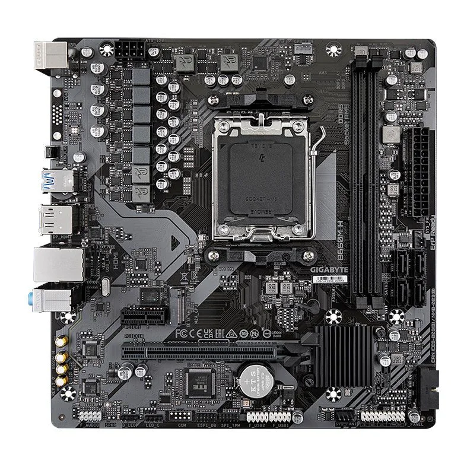
Base do sistema
Placa-mãe
Conecta os componentes e determina formatos, soquete do processador e conexões disponíveis.
- Formato
- ATX, microATX ou mini-ITX
- Verificar
- Soquete, chipset e memória
Aprenda antes de escolher
Entenda a função de cada peça, planeje compatibilidades e siga uma ordem de montagem segura.
Explorar componentesCatálogo essencial
As imagens são ilustrativas. As características descrevem a categoria de forma geral, sem atribuir especificações a modelos comerciais.

Base do sistema
Conecta os componentes e determina formatos, soquete do processador e conexões disponíveis.
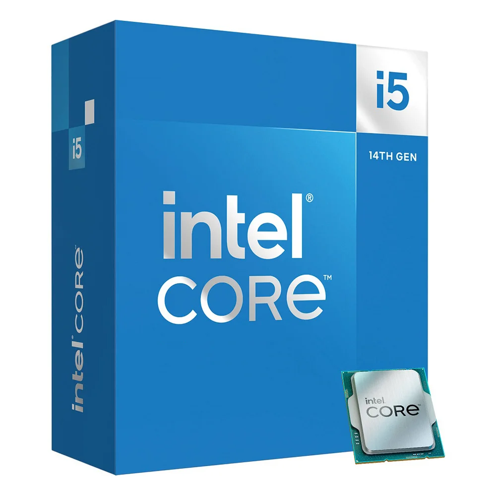
Processamento
Executa instruções e coordena tarefas do sistema e dos programas.
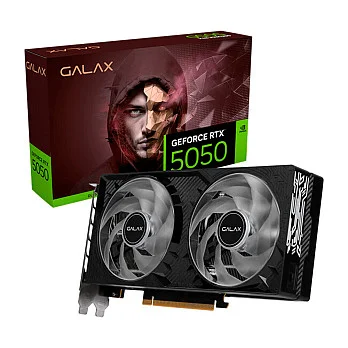
Gráficos
Renderiza gráficos e acelera tarefas compatíveis, como jogos e criação visual.
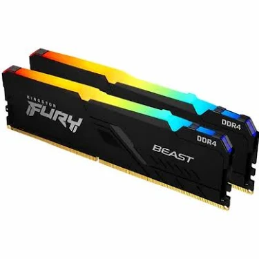
Memória
Armazena temporariamente dados usados pelos programas em execução.
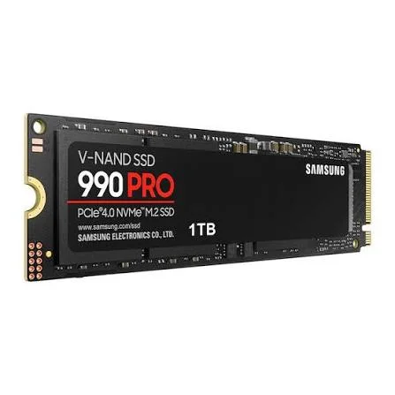
Armazenamento
Armazena sistema e arquivos em memória flash, com acesso rápido aos dados.
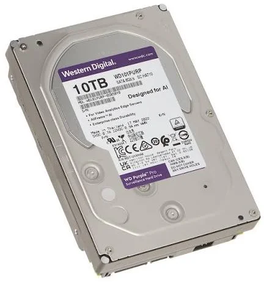
Armazenamento
Guarda grandes volumes de dados em discos magnéticos, útil para arquivos extensos.
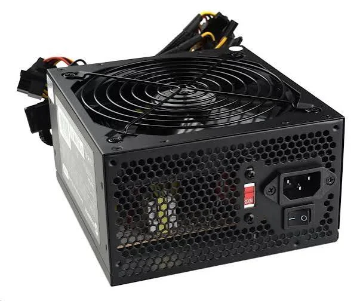
Energia
Converte a energia da tomada e a distribui aos componentes com conectores adequados.
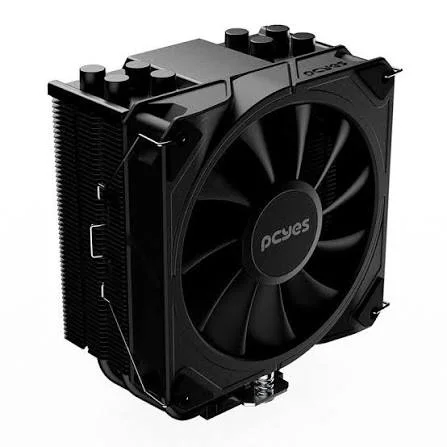
Refrigeração
Remove calor do processador por dissipador e ventoinha ou circuito líquido.
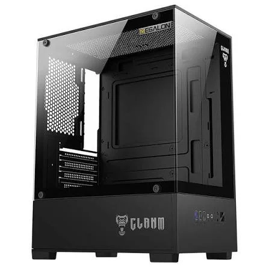
Estrutura
Abriga, protege e organiza as peças, influenciando ventilação e expansão.
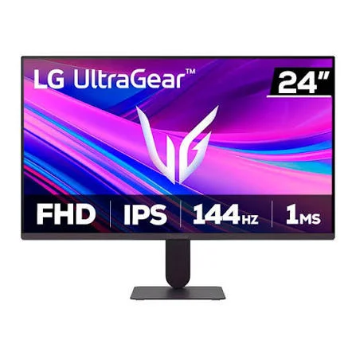
Saída de vídeo
Exibe a imagem gerada pelo computador para estudo, trabalho e entretenimento.
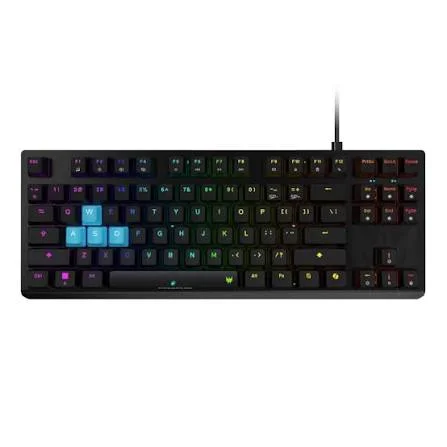
Entrada
Permite inserir texto e comandos; há modelos de membrana e mecânicos.
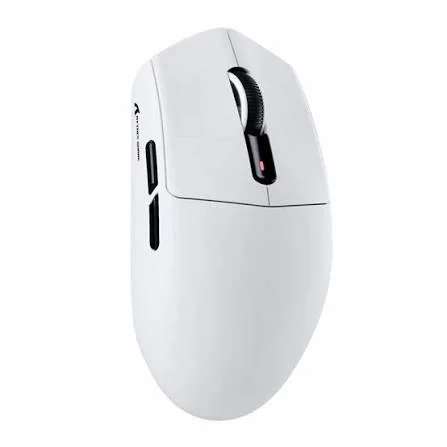
Entrada
Controla o ponteiro e oferece botões para interagir com a interface.
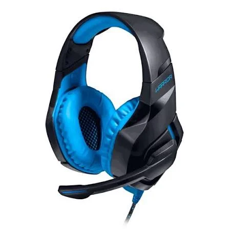
Áudio
Reúne fones e microfone para ouvir conteúdos e conversar em chamadas.
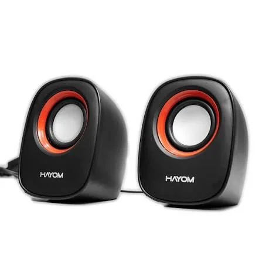
Áudio
Reproduzem áudio para ambientes compartilhados ou uso individual em mesa.
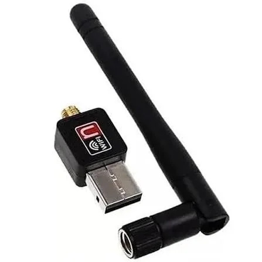
Conectividade
Permite conectar o computador a redes sem fio quando não há solução integrada.
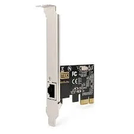
Expansão
Oferece uma porta de rede cabeada ou recursos de conectividade adicionais.
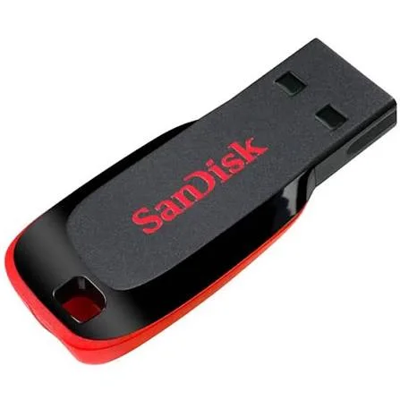
Acessório
Transporta arquivos e pode preparar uma mídia de instalação do sistema.
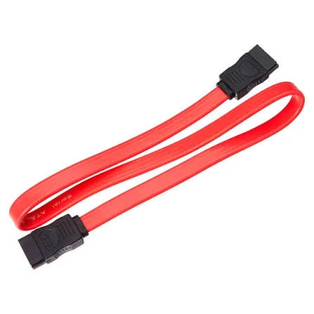
Conexões
Ligam unidades SATA à placa-mãe para transferência de dados.
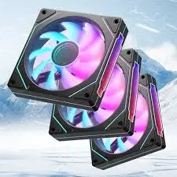
Refrigeração
Movimentam o ar para ajudar a remover calor dos componentes internos.
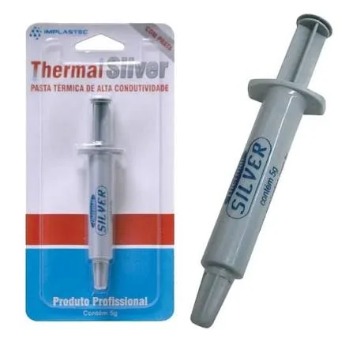
Refrigeração
Melhora o contato térmico entre processador e cooler quando aplicada corretamente.